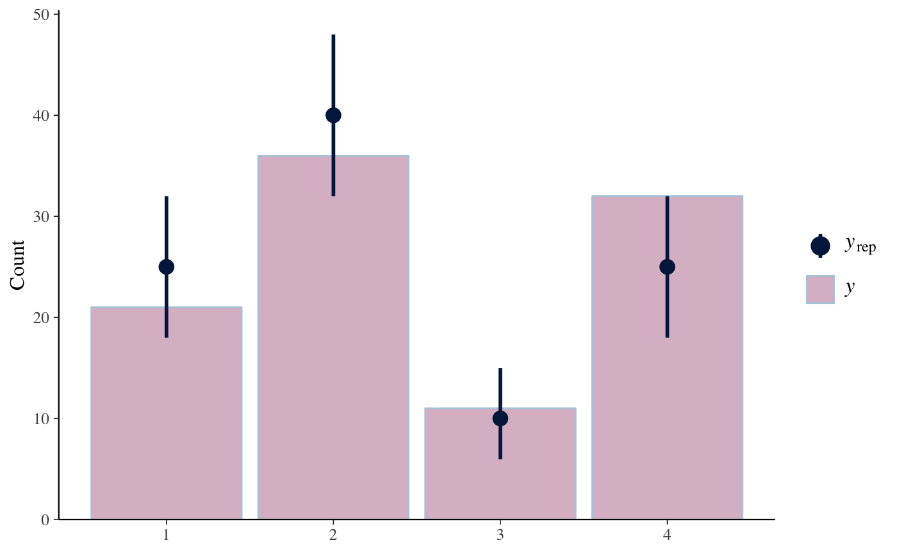
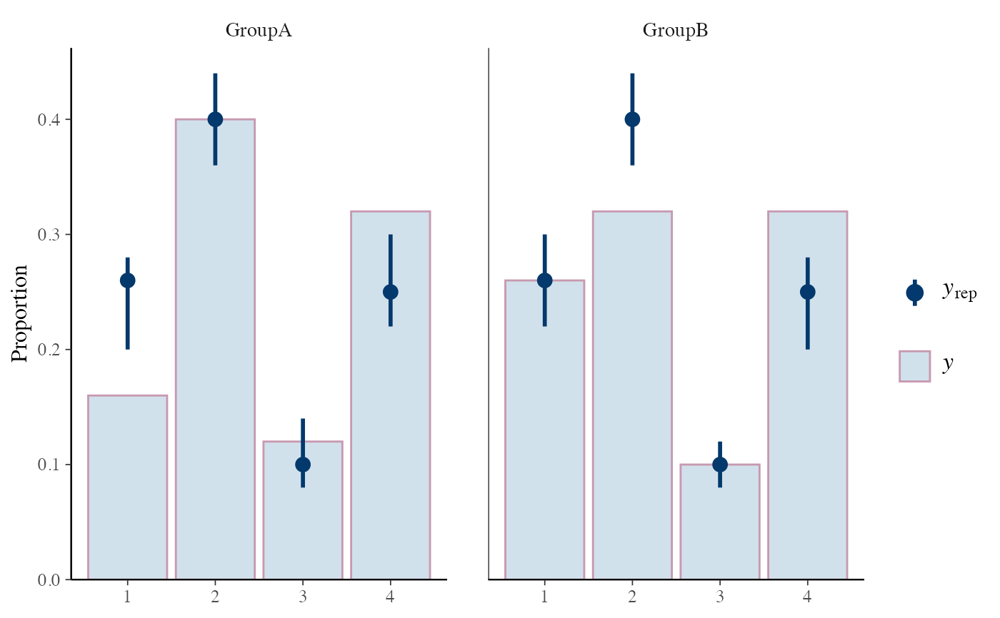
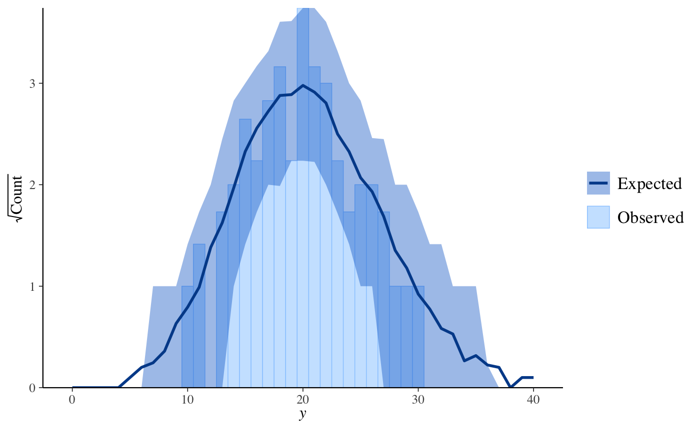
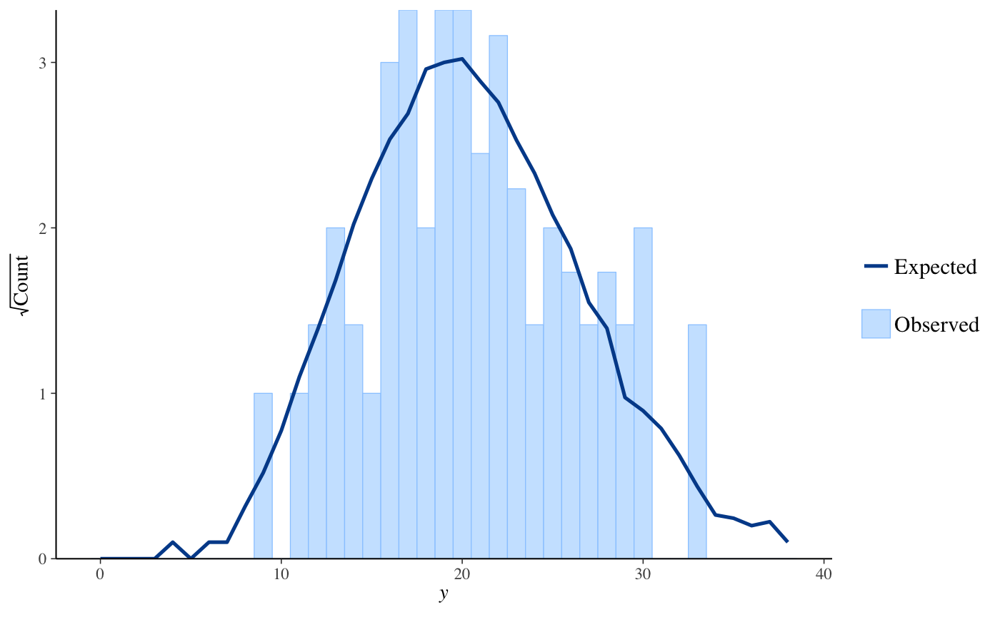
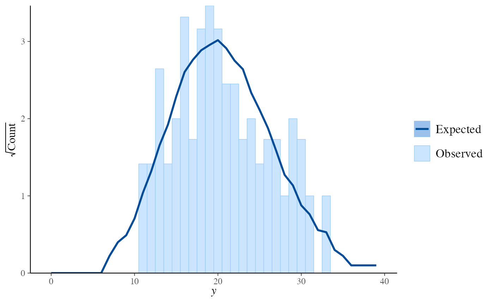

PPCs for discrete outcomes
This page documents the PPC functions that can only be used if y and
yrep are discrete. Currently these include rootograms for count
outcomes and bar plots for ordinal, categorical, and multinomial outcomes.
See the Plot Descriptions section below.
ppc_bars(y, yrep, ..., prob = 0.9, width = 0.9, size = 1, fatten = 3, freq = TRUE) ppc_bars_grouped(y, yrep, group, facet_args = list(), ..., prob = 0.9, width = 0.9, size = 1, fatten = 3, freq = TRUE) ppc_rootogram(y, yrep, style = c("standing", "hanging", "suspended"), ..., prob = 0.9, size = 1)
Arguments
| y | A vector of observations. See Details. |
|---|---|
| yrep | An \(S\) by \(N\) matrix of draws from the posterior
predictive distribution, where \(S\) is the size of the posterior sample
(or subset of the posterior sample used to generate |
| ... | Currently unused. |
| prob | A value between 0 and 1 indicating the desired probability mass
to include in the |
| width | For |
| size, fatten | For |
| freq | For |
| group | A grouping variable (a vector or factor) the same length as
|
| facet_args | An optional list of arguments (other than |
| style | For |
Value
A ggplot object that can be further customized using the ggplot2 package.
Details
For all of these plots y and yrep must be non-negative
integers, although they need not be integers in the strict sense of R's
integer type.
Plot Descriptions
ppc_barsBar plot of
ywithyrepmedians and uncertainty intervals superimposed on the bars.ppc_bars_groupedSame as
ppc_barsbut a separate plot (facet) is generated for each level of a grouping variable.ppc_rootogramRootograms allow for diagnosing problems in count data models such as overdispersion or excess zeros. They consist of a histogram of
ywith the expected counts based onyrepoverlaid as a line along with uncertainty intervals. The y-axis represents the square roots of the counts to approximately adjust for scale differences and thus ease comparison between observed and expected counts. Using thestyleargument, the histogram style can be adjusted to focus on different aspects of the data:Standing: basic histogram of observed counts with curve showing expected counts.
Hanging: observed counts counts hanging from the curve representing expected counts.
Suspended: histogram of the differences between expected and observed counts.
References
Kleiber, C. and Zeileis, A. (2016). Visualizing count data regressions using rootograms. The American Statistician. 70(3): 296--303. https://arxiv.org/abs/1605.01311.
See also
Other PPCs: PPC-distributions,
PPC-errors, PPC-intervals,
PPC-loo, PPC-overview,
PPC-scatterplots,
PPC-test-statistics
Examples
# bar plots f <- function(N) { sample(1:4, size = N, replace = TRUE, prob = c(0.25, 0.4, 0.1, 0.25)) } y <- f(100) yrep <- t(replicate(500, f(100))) dim(yrep)#> [1] 500 100group <- gl(2, 50, length = 100, labels = c("GroupA", "GroupB")) color_scheme_set("mix-pink-blue") ppc_bars(y, yrep)# split by group, change interval width, and display proportion # instead of count on y-axis color_scheme_set("mix-blue-pink") ppc_bars_grouped(y, yrep, group, prob = 0.5, freq = FALSE)# rootograms for counts y <- rpois(100, 20) yrep <- matrix(rpois(10000, 20), ncol = 100) color_scheme_set("brightblue") ppc_rootogram(y, yrep)ppc_rootogram(y, yrep, prob = 0)ppc_rootogram(y, yrep, style = "hanging", prob = 0.8)ppc_rootogram(y, yrep, style = "suspended")